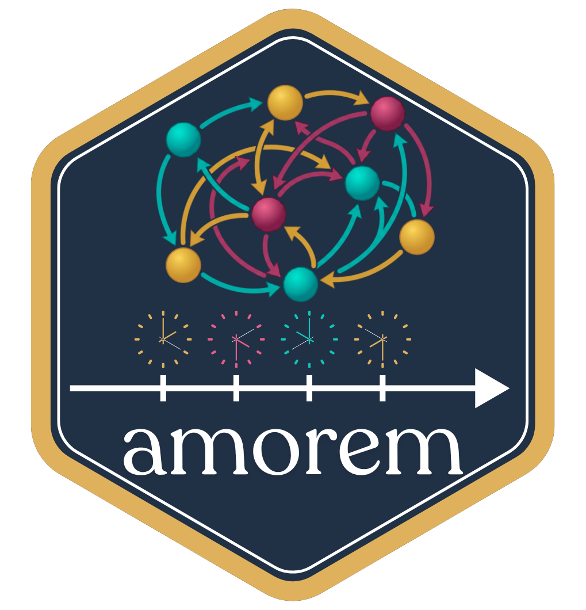

amorem

amorem — end-to-end simulation, sampling, feature engineering, model selection, and inference for relational event models (REMs) in R, in one consistent API.
The package consolidates four lines of recent methodological work:
- Dyadic REMs with timing / closure variants and one- or two-axis actor frailty, following Juozaitienė & Wit (2024, JRSS-A).
-
Relational Hyper Event Models (RHEMs) with set-valued sender/receiver hyperedges, subset-repetition covariates, and smooth effects (linear /
tv/nl/tvnl), following Boschi, Lerner & Wit (2025). - Global covariate effects — covariates varying in time but constant across pairs — via the time-shifted partial likelihood of Lembo, Juozaitienė, Vinciotti & Wit (2025, JRSS-C).
- Cumulative martingale-residual GOF tests, following Boschi & Wit (2025, Stat & Comp 36:4).
Installation
install.packages("amorem") # CRAN release
# remotes::install_github("franciscorichter/amorem") # development version30-second tour
library(amorem)
# 1. Bundled datasets, ready to load
data(classroom_events) # 691 events, 20 actors (McFarland 2001)
data(social_evolution_calls) # 439 events, 54 actors (Madan et al. 2011)
data(radoslaw_email) # 82,927 emails, 167 actors (Nurek & Michalski 2020)
# 2. Compute endogenous features post-hoc from any (sender, receiver, time) log
feat <- endogenous_features(
classroom_events, stats = c("reciprocity", "recency"))
# 3. Simulate a ready-to-fit case-1-control table with known structure ...
w <- simulate_relational_events(
n_events = 1500, senders = LETTERS[1:8], receivers = LETTERS[1:8],
n_controls = 1, endogenous_stats = "reciprocity_count",
endogenous_effects = c(reciprocity_count = 0.4), wide = TRUE)
# 4. ... and fit it with the default "gam" backend
fit <- rem(~ reciprocity_count, data = w, method = "gam")
summary(fit)What’s inside
-
rem()— the unified fitter for preprocessed case-control data, with a conditional-logit backend (case-k-control) and agambackend (case-1-control) supporting linear /tv/nl/tvnlsmooth effects andre()random effects, plussummary()/coef()/plot().widen_case_control()reshapes a long case-control log into the wide formrem()expects. -
simulate_relational_events()— exact Gillespie or τ-leap; composes exogenous, endogenous, and time-varying global covariates; withwide = TRUEemits a ready-to-fit case-1-control table. -
endogenous_features()— the endogenous catalogue computed post-hoc from any(sender, receiver, time)log. On case-control data only the observed events build the network history; the sampled controls are scored against it without entering it. -
sample_non_events()— nested case-control sampling with appearance / citation / remove risk-set rules, and time-shifted sampling (shift = "exponential") that keeps global covariates estimable. -
Datasets — event logs from published interaction networks, and
enso_nino34, a reconstructed El Niño index (1301–2005) for use as a global covariate. -
Goodness of fit —
gof_rem()tests a fittedrem()model (time, functional-form and score processes, bootstrap null that accounts for the estimated coefficients);gof_univariate(),gof_multivariate(),gof_global(),gof_auxiliary()refit a linear model from the event log; pointwisemartingale_residuals(). - The earlier
compare_models(),compare_models_smooth()andcompare_models_global()remain available (superseded byrem()).
Guides
| Guide | What you’ll find |
|---|---|
| Quick start | install + simulate-and-recover in a few lines |
| Simulation | the dyadic mechanisms, Gillespie vs τ-leap |
| Sampling options | the risk-set options of sample_non_events(): n_controls, mode, scope, risk = "remove", exclude_concurrent, exclude_pairs, shift
|
| Endogenous catalogue | the statistic catalogue and its variant axes |
| Estimation | case-control sampling, the three rem() backends — clogit (linear), gam (smooth tv/nl/tvnl/re effects), nn (neural conditional logit) — model comparison, GOF |
| Hyperedge models | the (I, J, time) data model, subset repetition, multi-recipient e-mails as hyperevents, and the RHEM simulators |
| Datasets | the event logs and covariates that ship with amorem: what each one looks like, its source and licence |
| Data catalogue | 78 relational event datasets and covariates, bundled or not: what each one is, its licence, code to download it, and pictures of its network and timeline; no models are fitted |
| Analyses of bundled event logs | models fitted to three bundled logs (classroom, company email, CollegeMsg): timing vs count statistics with and without a sender frailty, smooth effect curves |
| Validation experiments | recovery, smooth, scaling, parity, and the neural backend (gradient check + interaction recovery) |
| GoF calibration | type-I error of the martingale-residual GoF tests under correct specification |
| Case study: email and the clock | time of day and day of week as global covariates in the Manufacturing e-mail log, time-shifted sampling, cyclic smooths, tv() on shifted data, gof_rem(), gof_multivariate(), gof_auxiliary()
|
| Case study: Social Evolution | data intake, actor attributes and survey friendship as covariates, rem(method = "clogit"), a sender random effect with re()
|
| Case study: estimation backends |
clogit, neural (nn, MLP and additive splines, nn_uncertainty()) and gam with tv() / tvnl() on Email-EU-core, compared on held-out e-mails |
| Case study: cosponsorship in the 118th Congress | bills as directed hyperevents (sponsor → cosponsor set): hypergraph, party-coloured network, chord and adjacency views; a sender- and size-matched case-control fit of repetition, reciprocity, pair co-cosponsorship, party and state, and a tv() party-homophily curve |
| Case study: calls and text messages | two-layer (multiplex) REM on the Copenhagen Networks Study: cross-layer history as a covariate, reciprocity and repetition per layer, gender homophily, the daily cycle as a global effect with time-shifted sampling and cyclic smooths |
| Case study: leader visits to and from the US | a star-shaped event network, 1945–2019: per-direction case-control sampling (mode = "two", scope = "appearance"), reciprocity and inertia by direction with rem(method = "clogit"), the nl() decay of reciprocity and tv() inertia over 75 years |
| Case study: armed-conflict dyads | yearly tied events scored from earlier years only (prior_log), a risk set of dyads with a past; recurrence, escalation, the decay of a conflict’s pull with nl(), and a tv() effect |
| Case study: international football | matches since 1872 as undirected events: rivalry network with regional groups, recency smooth, common opponents (triadic closure), friendlies against competitive matches |
| Case study: first records of alien species | observed species-to-region first records with mode = "two", risk = "remove", prior_log and time-shifted sampling; shared-invader network, timing heatmap, taxonomy by group, ENSO (ONI) as a global smooth |
| Species invasions | a one-shot (risk = "remove") process with ENSO as a global driver, fitted by time-shifted sampling |
Full per-function documentation is under Reference.
References
- Juozaitienė R., Wit E.C. (2024). It’s about time: revisiting reciprocity and triadicity in relational event analysis. JRSS-A 188(4), 1246–1262. doi:10.1093/jrsssa/qnae132.
- Boschi M., Lerner J., Wit E.C. (2025). Beyond Linearity and Time-Homogeneity: Relational Hyper Event Models with Time-Varying Non-Linear Effects. arXiv:2509.05289.
- Lembo M., Juozaitienė R., Vinciotti V., Wit E.C. (2025). Relational Event Models with Global Covariates. JRSS-C.
- Boschi M., Wit E.C. (2025). Goodness of fit in relational event models. Statistics and Computing 36(4).